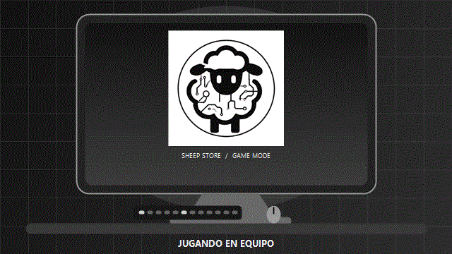

COMPUTACIÓN
01 / 05
Computación
Equipos listos para tus próximos proyectos.
Tecnología para lo que sigue
Productos que inspiran y servicios que hacen que todo funcione. Encuentra en Sheep Store un mejor camino para conectar con lo que importa.
Una selección para ti
Explora equipos, accesorios, servicios y programas para que tu tecnología te acompañe en cada etapa.
Equipos listos para tus próximos proyectos.
Conecta con tus ideas, estés donde estés.
Detalles que elevan tu experiencia.
Limpieza profunda, revisión térmica y optimización para laptops.
Tu nuevo programa de Sheep Store para Windows.
Descargas gratuitas
Lleva Sheep Store contigo. Descarga gratis tu diseño favorito para computadora o celular.

FONDO 01 / 28
Fondo animado · GIF
Cuidado integral para tu laptop
Evaluamos el equipo antes y después del servicio, realizamos limpieza interna y externa, revisamos la refrigeración y ayudamos a optimizar el sistema para prolongar su vida útil.
Revisamos encendido, pantalla, teclado, puertos, conectividad, batería, almacenamiento y temperaturas.
Limpieza cuidadosa de componentes, ventiladores, disipadores, pantalla, teclado, puertos y carcasa.
Revisión del sistema térmico y optimización de archivos, inicio, actualizaciones y controladores.
Volvemos a comprobar las funciones principales y el rendimiento general del equipo.
El procedimiento se adapta al modelo y a su arquitectura. La renovación de pasta térmica o thermal pads se realiza cuando corresponde; los repuestos y reparaciones se cotizan por separado.
Una forma más humana de conectar
Creemos que elegir tecnología no debería ser complicado. Por eso combinamos una selección cuidada con atención cercana: para que encuentres justo lo que necesitas, sin ruido.
Así trabajamosEstamos para ayudarte
¿Buscas un equipo, un servicio o simplemente tienes una consulta? Escríbenos o llámanos.
Tu próximo paso empieza aquí
Explora nuestras soluciones y encuentra la tecnología que va contigo.
Encuentra tu solución